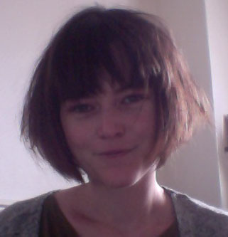

Postdoc in NLP, Team CoAStaL - Lowlands - University of Copenhagen.

Domains of interest: natural language processing, machine learning, discourse parsing, domain adaptation.
Find my CV here.
Chloé Braud, Identification automatique des relations dicursives implicites à partir de corpus annotés et de données brutes, PhD Thesis, University Paris 7 (France) link - Prix de la meilleure thèse ATALA 2015 (Best PhD thesis Award)
Chloé Braud and Pascal Denis, Comparing Word Representations for Implicit Discourse Relation Classification, in Proceedings of the Conference on Empirical Methods in Natural Language Processing (EMNLP 2015) link
Chloé Braud and Pascal Denis, Combining Natural and Artificial Examples to Improve Implicit Discourse Relation Identification, in Proceedings of the 25th International Conference on Computational Linguistics (COLING 2014) link
Chloé Braud et Pascal Denis, Identification automatique des relations discursives "implicites" à partir de données annotées et de corpus bruts, in Actes de la 20e conférence sur le Traitement Automatique des Langues Naturelles (TALN 2013). Volume 1: TALN-RECITAL. pp.104-117 link - Prix du meilleur article TALN (Best Paper Award)
Laurence Danlos, Diégo Antolinos-Basso, Chloé Braud et Charlotte Roze, Vers le FDTB : French Discourse Tree Bank, in Actes de la 19e conférence sur le Traitement Automatique des Langues Naturelles (JEP-TALN-RECITAL 2012). Volume 2: TALN. pp.471-478 link
Introduction to object programming with Java (49LI0336), CM/TP L3, University Paris 7 (France)
Computationnal Semantics (49LI3342), TD M1, University Paris 7 (France)
Introduction to NLP (49LI0336), CM/TP L3, University Paris 7 (France)
Mentoring, L3, University Paris 7 (France)
email: chloe.braud@gmail.com
adress: